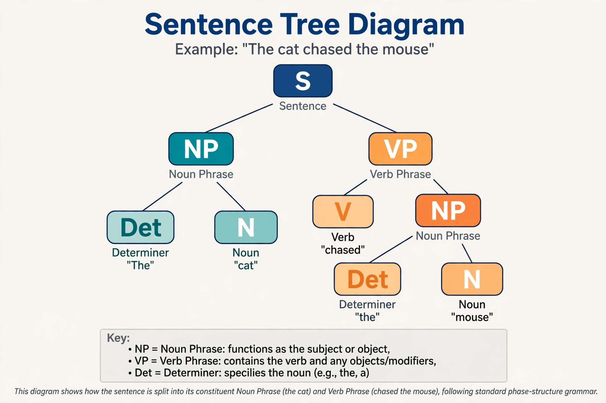

Grammar

Grammar is the set of structural rules that govern how words and phrases combine into sentences in a language. It comprises morphology, the internal structure of words (roots, prefixes, suffixes, inflections), and syntax, the arrangement of words into clauses and sentences. Every spoken language has a grammar in this descriptive sense, whether or not it is ever written down: native speakers follow its rules fluently without being able to state them.
Descriptive and prescriptive grammar
Linguists distinguish descriptive grammar, which records how speakers actually use language, from prescriptive grammar, which lays down rules of correctness for a standard variety — the province of style guides, schools and dictionaries. The two senses have coexisted since antiquity: Pāṇini's grammar of Sanskrit was rigorously descriptive, while the grammars of Dionysius Thrax (for Greek) and Donatus and Priscian (for Latin) became models for teaching for two millennia.
Key concepts
Languages mark grammatical categories such as tense, aspect, mood, case, number, gender and person, but differ enormously in how much grammar is packed into word forms: Russian is highly inflected, Mandarin largely analytic. In the 20th century Noam Chomsky's generative grammar reframed the field around the idea of an innate human capacity for language and formal systems for generating all and only the grammatical sentences of a language. Related fields include phonetics (sounds), semantics (meaning) and pragmatics (language in use).